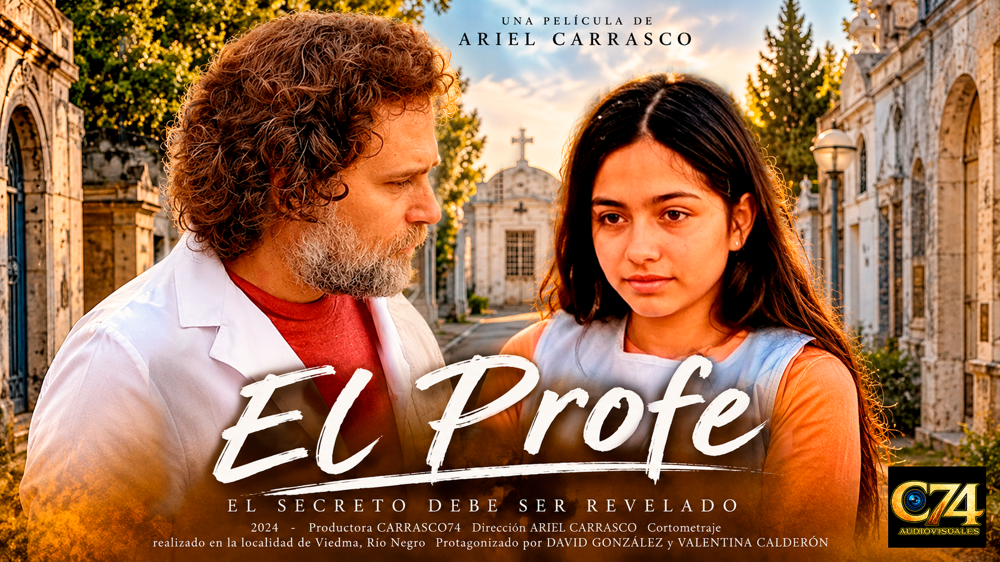

Historias
realizadas.
Una selección de las producciones documentadas de Carrasco74: televisión cultural, cortometraje de ficción y una serie de época en preproducción.
Cero DB ¡Viva el Arte!
Ciclo semanal de una hora de duración, creado, producido y conducido por Genaro Ariel Carrasco. Desde 2015 y con más de 11 años al aire, constituye un espacio televisivo de referencia en la región para artistas y festividades populares.
La música y la cultura, en pantalla
El programa muestra y levanta las banderas de músicos locales, intérpretes, autores, fiestas populares y aniversarios de las localidades vecinas, recorriendo distintos géneros musicales.
Su trayectoria combina la televisión por cable y aire con la presencia en plataformas digitales, con emisiones en vivo y especiales realizados desde distintos puntos de Viedma.
- Creación y conducción
- Genaro Ariel Carrasco
- Formato
- Ciclo semanal · una hora
- Señales (2015–2019)
- Supercanal, ENTV, CCV y señales del interior rionegrino
- 2020
- Ciclo “Quedate en Casa – Artistas locales en la red” (50 programas)
- 2021–2025
- ENTV 31.1 TDA, TV por cable, YouTube y Facebook Live
- 2026
- Gira Provincial y Ensamble Sinfónico de Cero DB
El Profe
Cortometraje de ficción de 8 minutos dirigido y realizado por Ariel Carrasco, filmado íntegramente en la ciudad de Viedma.

Un recorrido por la ciudad
La obra narra el enigmático trayecto de una niña de doce años junto a su vecino y profesor, a través de un recorrido por la ciudad que conduce a un desenlace inesperado.
El rodaje utilizó como escenarios un establecimiento educativo primario, un domicilio particular cercano a la Costanera, la céntrica Plaza del Fundador y el Cementerio Local de Viedma.
- Dirección y realización
- Ariel Carrasco
- Duración
- 8 minutos
- Elenco principal
- David González (El Profe) · Valentina Calderón (Laurita)
- Estreno
- Presentado a sala llena en el Cine Rex de Viedma
MOREIRA
Serie dramática de época ambientada entre 1860 y 1874, producida por Carrasco74 Productora Audiovisual, orientada a plataformas internacionales de streaming.
La historia del mítico gaucho
La trama explora la historia del mítico gaucho Juan Moreira relatada por el anciano Julián Andrade al joven Facundo. La serie aborda los dilemas de la justicia, la opresión social, la vida en la clandestinidad y la resistencia de las comunidades originarias bajo el mando del lonko Coliqueo.
El proyecto combina reconstrucción histórica de época, registro cinematográfico en Ultra HD y coreografía de esgrima criolla a cargo del maestro Jorge Emilio Prina.
- Producción
- Carrasco74 Productora Audiovisual
- Formato
- 8 episodios de 30 a 40 minutos
- Género
- Gauchesco, Acción, Drama Histórico y Romance
- Período
- 1860 – 1874
- Recursos técnicos
- Ultra HD, grúas, travelling y tomas aéreas con dron
- Música y participantes
- La producción contará con la participación de artistas de renombre y destacados referentes del ámbito musical, cuya incorporación aportará jerarquía artística y una identidad sonora distintiva a la serie.